Pas seulement une publicité. Totem Experience conçoit, produit et diffuse les contenus qui font parler les marques en Afrique francophone, avec les créateurs que votre public suit déjà.
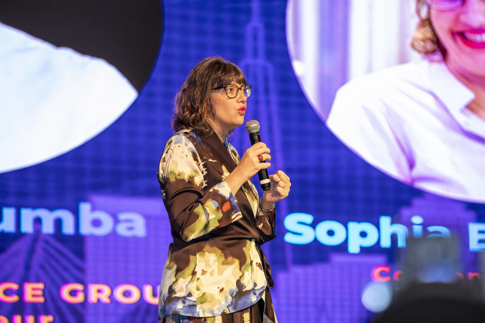
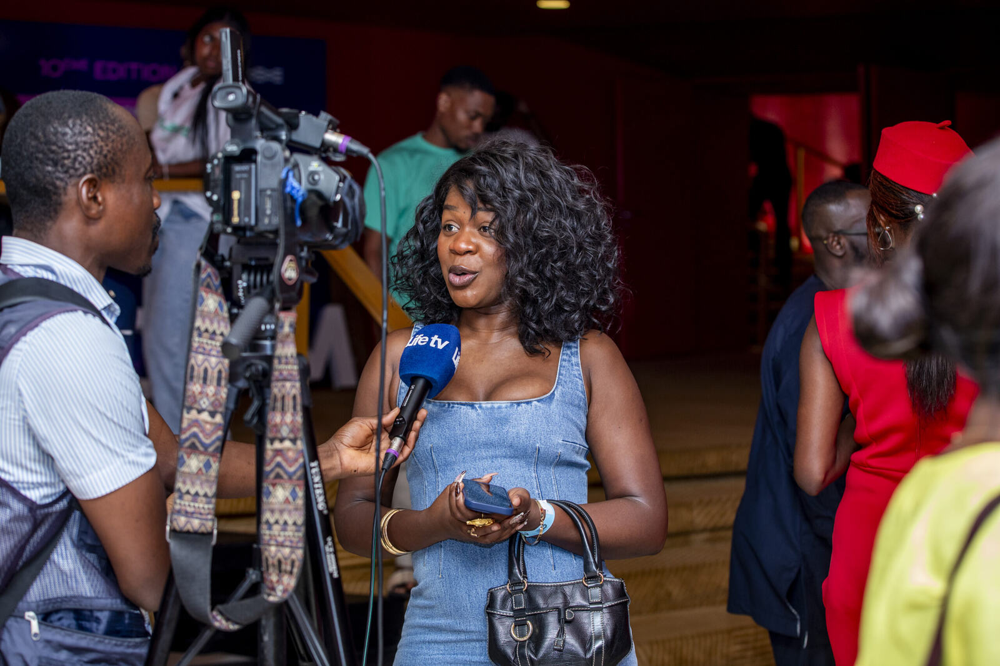
Nous avons bâti le premier réseau d'agences digitales d'Afrique francophone . Une agence qui pense la campagne, un studio qui fabrique les contenus et une communauté qui réunit le digital africain chaque année .
Un seul interlocuteur pour penser, fabriquer et faire circuler vos contenus. Personne ne se renvoie la balle.
L'agence digitale : stratégie, influence, réseaux sociaux et publicité en ligne, pilotées sur plusieurs pays à la fois.
Le studio de création : concepts, web-séries, formats courts et vidéos de marque, écrits pour l'usage qu'en fera votre public.
Chaque année à Abidjan, le rendez-vous des marques, créateurs, entrepreneurs et responsables marketing du digital africain.
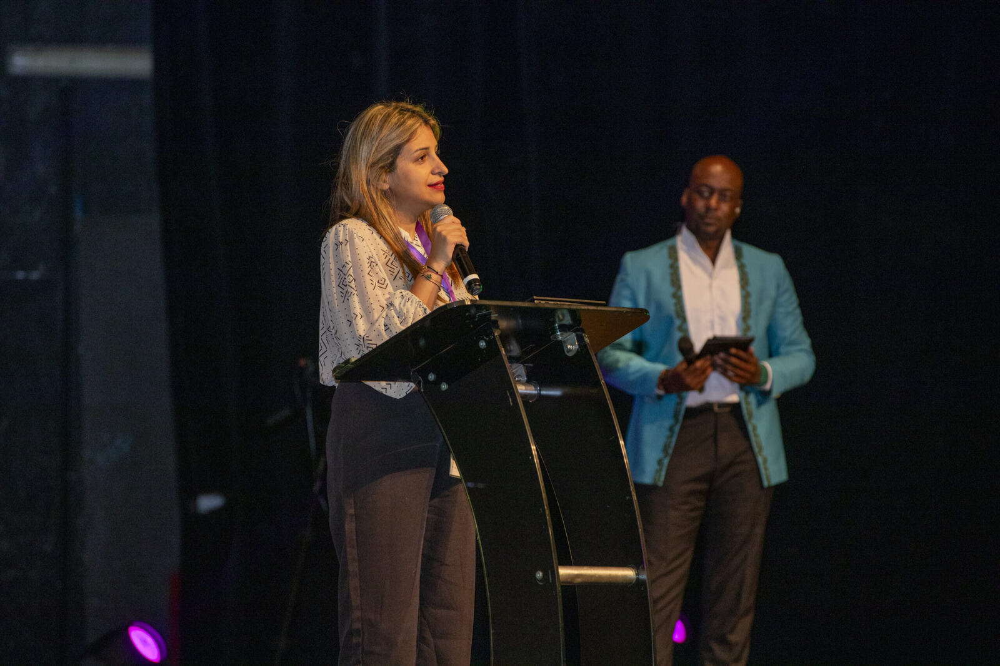
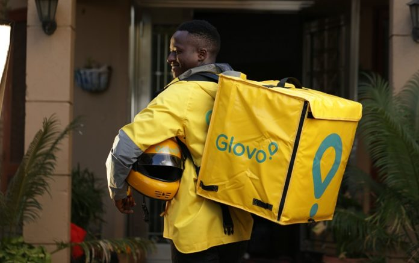
Une quinzaine de créateurs ivoiriens mettent en scène les livreurs et partagent les codes promo.
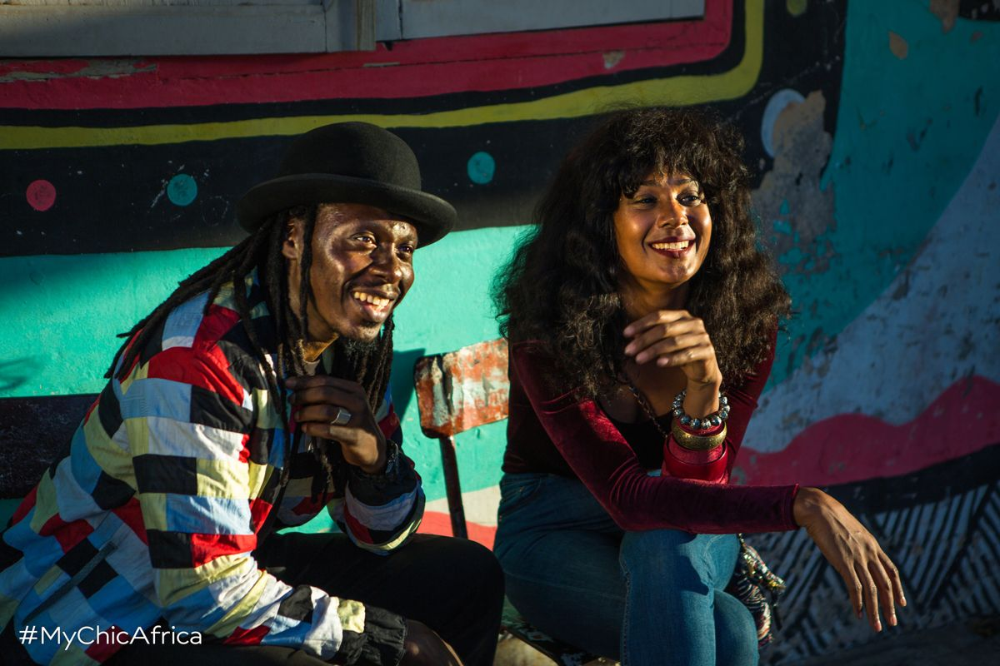
Un guide de voyage d'une Afrique chic et hors des sentiers battus, raconté par des influenceurs du continent.
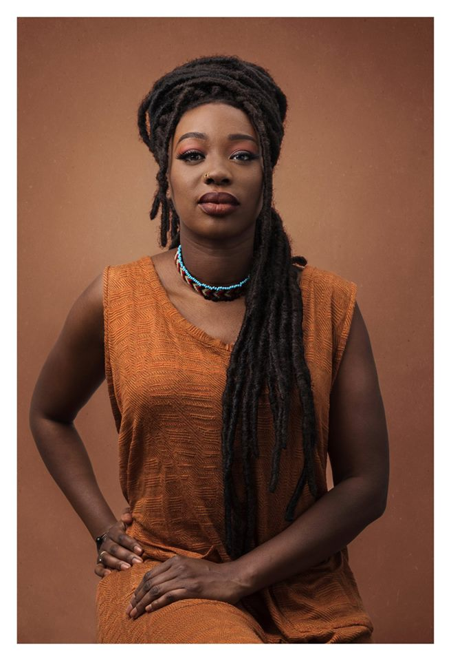
Deux campagnes pour la diaspora. La seconde dépasse les 22 000 réactions.
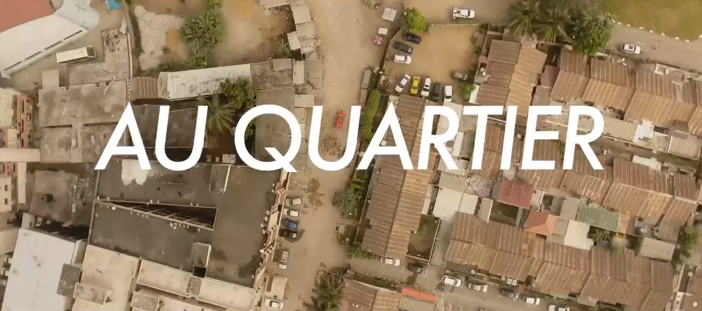
Une web-série sur les « experts amateurs » de foot qui animent chaque quartier.
Une campagne réussie commence par une bonne question, pas par un devis.
Votre objectif, votre public, vos pays, votre calendrier. Trente minutes suffisent pour démarrer.
Un concept, les créateurs qui l'incarnent, les formats et le budget, dans une recommandation claire.
Le studio fabrique, l'agence orchestre la diffusion pays par pays.
Portée, réactions, clics, ventes quand on peut les suivre. Vous savez ce que chaque franc a rapporté.
L'idée est de créer un cadre où émergent des concepts novateurs avant même de les voir formulés dans les briefs clients.
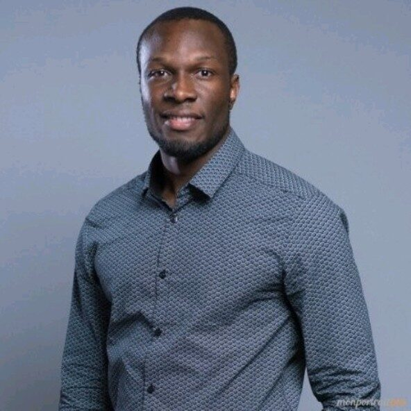
Antony BahCofondateur et directeur associé, Totem ExperienceCréateurs, entrepreneurs du digital, marques et responsables marketing de la région se retrouvent chaque année pour parler de ce qui marche vraiment.
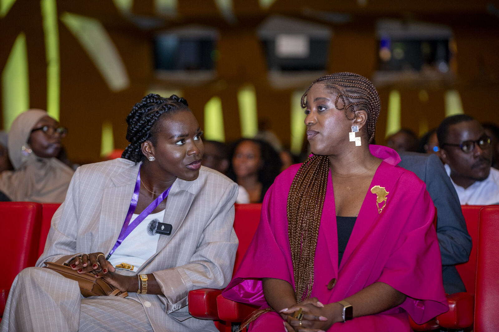
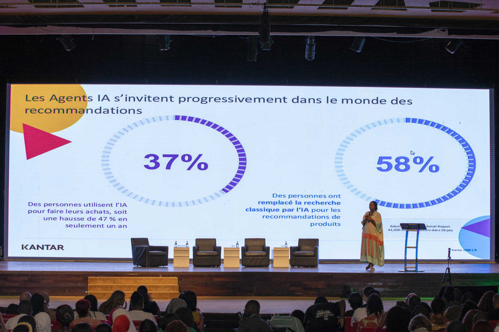
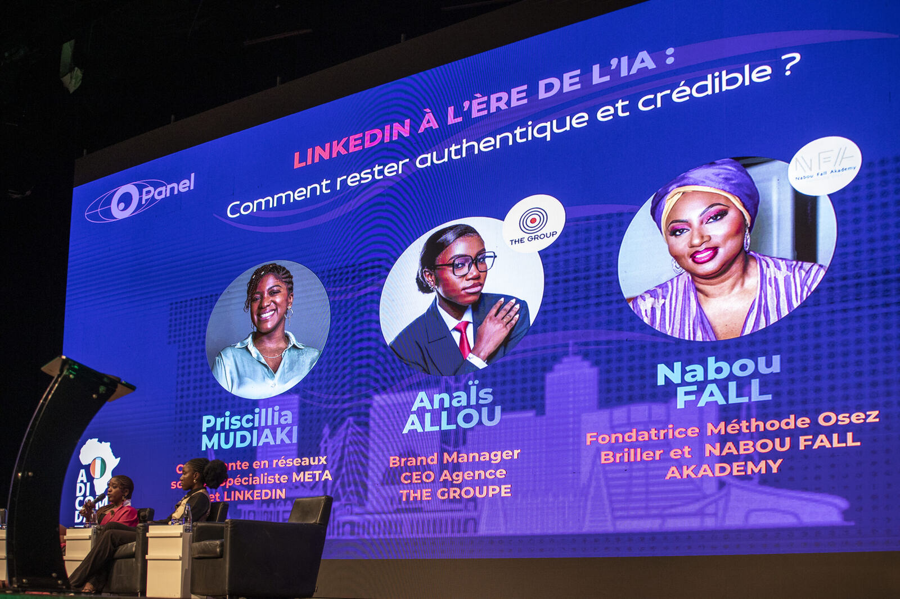
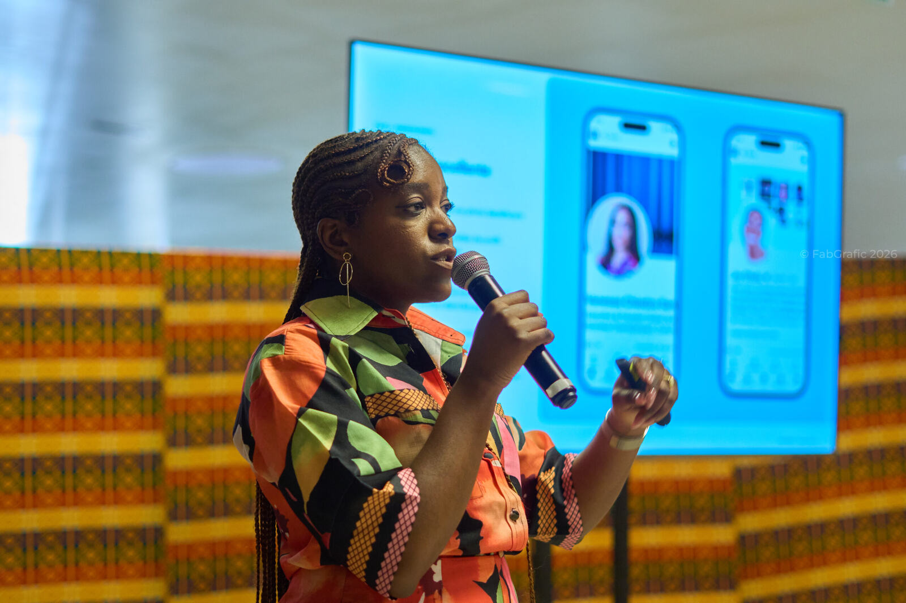
D'une agence d'influence à un groupe présent dans sept pays : découvrez comment Totem Experience s'est construit, et qui le fait vivre.
Lire notre histoire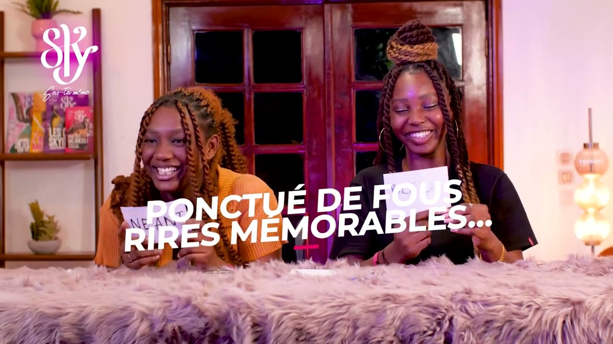
Non. Nos équipes sont en Côte d'Ivoire, au Sénégal, au Bénin, au Burkina Faso, au Mali, en Guinée et en RD Congo, et notre réseau nous permet de mener une même campagne dans quinze pays.
L'agence pense la campagne et la fait circuler. Le studio fabrique les contenus. Vous pouvez faire appel à l'un, à l'autre, ou aux deux.
Sur leur public, pas sur leur nombre d'abonnés : qui les suit, dans quel pays, avec quel engagement, et s'ils sont crédibles pour parler de votre produit.
Oui : des groupes dont le siège est à Paris, Casablanca, Johannesburg ou Dubaï, pour leurs campagnes panafricaines.
Une marque à faire aimer en Afrique ? Racontez-nous votre projet : on revient vers vous avec une première piste.
Recevoir une proposition